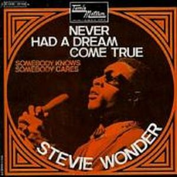
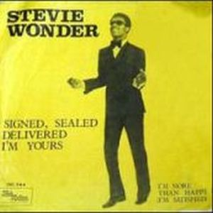
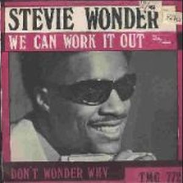

"Signed, Sealed & Delivered" contó con la producción y arreglos de Stevie Wonder, ayudado tambien de Paul Riser, Wade Marcus y Henry Cosby. Stevie no perdió ese toque comercial en canciones como "Signed, Sealed, Delivered I'm yours", sin perder la sensibilidad que le llevaba más allá del sonido Motown más pop. Ansioso por experimentar con las nuevas tecnologías que abrían un universo musical, y preocupado por no verse limitado por las tendencias del mercado. No obstante hace una de las mejores versiones que se han hecho de una canción de los Beatles "We Can Work It Out".
La lucha interna con Berry Gordy por el control creativo, no impidió que Stevie mostrará su gran capacidad en tratar de hacer lo más personales posible el concepto en sí del disco.
  